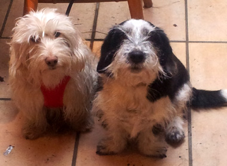
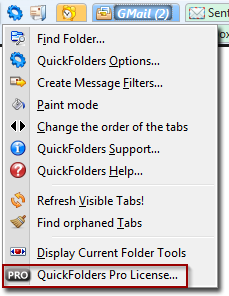

QuickFolders.org
| Home Installation Version History FAQ + Tips Support QuickFolders! Screenshots Bugs + Feature Requests quickFilters Menu On Top |


Thanks for Updating QuickFolders!
If you've found QuickFolders to improve your mail life, please buy a QuickFolders Pro license.
We can really use the support. Thanks again in advance.
Some pictures from my late sister's art portfolio.
Get QuickFolders Pro for 2018!
Donate to Support QuickFolders
QUICKFOLDERS PROPlease support the future of QuickFolders and enjoy unlimited Premium Features. You can purchase a license from QuickFolders options, using the QuickFolders Pro tab. It's super easy and helps future proof this Add-on. Install the latest QuickFolders version and then click the Buy License item from the QuickFolders Pro tab on the Options dialog. If you prefer, you can also go to the web shop directly: FastSpring Web Shop I have kept the process as simple and hassle free as possible, and you can use QuickFolders Pro on as many Thunderbird installations as you like as long as it has your registered email address on it. Also, the email address is not given to any third parties, it is only used for order fulfillment and license verification. |
 |
Thanks for supporting QuickFolders through your Premium License. If you want to buy me a beer as well, you can donate below - many many thanks!
Donate Instead
If you're not ready to support the QuickFolders project through buying a license, you can buy me a coffee instead. Just note for this you will need a paypal account. The licenses (above) can be paid with other payment methods.
|
I love QuickFolders - it makes working with folders a breeze! Yes! It makes me more productive
so I want to buy you a coffee! If you actually have donated already or have no spare change you can also disable this page. |
Use Filters!
Even if you do not want to or cannot donate right now, please download the new quickFilters, an awesome new tool for making working with mails productive again. You have seen some of its functionality in QuickFolders but this is going to take filtering to a whole new level. With this is it really simple to set up automated mail to folder distribution, it is as simple as drag, click, click. I have already plans for devloping this into a full blown filter suite once it gets a few hundred users, but I would really appreciate some early feedback.
See what is does here: quickFilters @ mozdev.org Note that it also integrates nicely with QuickFolders' filtering functionality, by automatically starting / ending the filter teach mode of it, so you can drag your emails either into the folder tree or on one of your QuickFolders tabs. No new learning curve!
One of the next features I am planning is the possibility to copy filters between different mail accounts!
Do you suggest any amount?
US$ donations: we suggest 10$ as that seems to be be a what most people like to donate - but of course smaller and greater amounts are always welcome.
Euro donations: 5 Euros would be nice and 10 Euros or more considered generous! Some people have given 50$ some 1$ (well most of that one Dollar goes to Paypal but the thought counts), but anything is welcome.
Your tip is important to make QuickFolders even more excellent!
You can also add some feature requests here: Bugs + Features.
And if you are very happy with QuickFolders, why not leave a good review at Addons at Mozilla.org?. Spread the word!
But I don't like / never use Paypal!
Just send me an email, and I give you my address for a cheque or note.
How much time do you spend working on QuickFolders?
Well, probably too much. Ask my wife and kids and friends. Honestly there is a ton work in there, and I am not paid for it; that's partly because off the constantly new releases Mozilla throws our way, support for three different email clients (Thunderbird, SeaMonkey and Postbox) and also backwards compatibility (yes, QF still works in Thunderbird 2 and 3, although version 8 is just round the corner), which leads to a much more complicated code base. Support for Linux and Mac, which is actually sometimes different due to varying implementation of drag-and-drop.
Oh BTW, if you do not use drag-and-drop in QuickFolders you are missing out on about 75% if the functionality; yes, I AM serious. You can just about drag-and drop anything to anywhere, and this is done deliberately so there is less scrolling, searching and clicking involved in your daily email routine.
When I am not fixing bugs or coding new features you guys request, then I am probably writing documentation, correspond with one of the many translators (QF is multilingual, a Babelzill project), supporting somebody who wants to know something is done, writing support emails, or updating the pages. And then I am thinking about how I could make email even easier. There is still a ton off stuff that can be done better when you're dealing with email a lot; shaving off time when looking for, answering, sorting, forwarding, filtering and filing away email, all that good and happy stuff that we do not really want to waste any of our precious life time on.
So the credo is, keep it simple, but give me powerful features! And make it look cool if you can.
On the side, I work as Editor for Addons at Mozilla, reviewing Addons that other people have written, and I do not get paid for that either. I do it because I believe the web is an important part of our life, and as such it deserves to be a better place; so the tools we use to make it better have to be of a better quality and we want to be able to trust them. This can only be achieved by thorough reviewing and control of what goes into them.
Free Software, Yayh!!
What's the meaning of this free software ??
Free as in Free Speech, not as in Free Beer.
I think the most important aspect on free software is that it is a political statement to avoid the pitfalls of proprietary, monopoly driven software that coined terms such as "Embrace, Extend and Extinguish" and the innovation crippling model of patenting software (for further reading, please see links below). At the moment there is a conflict (I almost wrote war) between the old proprietary model of software and the Free Software Concept, and its you, the users who will really decide where the future will take us. By downloading the Mozilla products and extensions by independant software developers, like QuickFolders, you are actively helping the cause.
The "free" Model

As users, we like to use the software the way we want, and we more or less expect it to be free of charge. The question is what do the commercial software vendors make of this? Since the advent of facebook is a shift of users (and their data) from being the customers becoming the merchandise, and the corporations becoming the customer. This is because even the best community sites cannot operate without profit. The web is already overfraught with advertisement and data mining - The alternative is truly Free software that is funded by donations.
there is an excellent description of this concept here:
Quote: “Free software” is a matter of liberty, not price. To understand the concept, you should think of “free” as in “free speech,” not as in “free beer.”
Free software is a matter of the users' freedom to run, distribute, study, change and improve the software.
It is also important to note that you can always modify QuickFolders as its open source and send me improvement suggestions. Or you can use features in the existing software and use them in your own extension, provided you stick to the license (you can not create commercial versions of the extension and you need to attribute / credit the original authors). I have tried to make the code as readable as possible, so that you can check how QuickFolders achieves its various goals.
The Web of Freedom - how much longer?
What's happening right now?
The American congress now tries to introduce censorship of the internet. Click here for more information.
The web is changing very massively over the last 2 years. This requires rethinking on how we use this community resource. Community Sites are gaining a big amount of the power and the market share, the "login with facebook" idea is now trying to lock our identities into their systems; building huge silos that lock in our data in order to keep users "within" their systems; and while the web is still an open place and there are lots of "login with facebook" buttons, yet it has become increasingly difficult to move our own data, determine when and where it is used and stored. This is because in this new model, the users become the merchandise and the corporations become the customers. It is because in a "free" world this seems to be the only way to generate some revenue, and believe me that community sites such as facebook are _not_ there to server the users. Like anything else they are there to make money. The question is whether financing by loosing the ownership of one's own data and getting channeled into advertisment slots, is really the way we want to go?
We are not the product! We are the community!
Mozilla is currently working on a new concept called BrowserId, which aims to allow users to bring their data with them, makes sure the data is encrypted on the server so it cannot be abused or mined without the user's consent. It also should make it easier for the user to move the data across to a different community provider or remove it altogether. This is clearly not in the interest of the community sites themselves if they base their business model around being "the only one", but it is another necessary step for the webn to grow up, and for us users to emancipate ourselves from the providers.
A word on donations
I think that the donation model as such works, although I wish more people of the daily users (there is about 20,000 of you) would take the time to donate some money. At the moment there are about 10 to 15 donations for each released version. So, if you've found QuickFolders to improve your work or business productivity, please consider donating. We can _really_ use the support. Thanks again in advance.
One thing that I think is a bad idea is to try to use advertisement or constant "nagging" at the users in order to earn some money. I am actively refusing extensions that try to do things like add advertisements within the content area, change browser links (by adding referrers) or redirect users in order to achieve this, there is a very fruitful discussion on the AMO Editors team who constantly review issues that the users bring to our attention around this topic.
However, I also acknowledge that it is an inconvenience and a bit of a leap of faith to make a donation, so I would like to say to all of you who have donated: you rock our world! Thank you both on behalf of the developers the hard working translation teams and on behalf of the other users who haven't thought about giving something just yet.
thanks for reading
yours sincerely, Axel Grude
Some Further Reading
- Richard Stallman - What is free software? - Youtube
- Free Software Definition
- Embrace, Extend and Extinguish - Wikipedia
- Patent Absurdity - How software patents broke the system
- The Cathedral and the Bazaar - an article about the philosphy behind the Open Source development model
- An in depth Stallman interview on free software and software patent - Youtube
- Open Source - Wikipedia
- The Browser Wars - Wikipedia
Turn off Donation Page
If you don't want this page to display every time QuickFolders is updated, please follow these instructions. Hope you have donated already :)
1. open QuickFolders options - easiest way is
a) from the cogwheel icon on the current folder toolbar:

... or:
b) from the cogwheel menu item QuickFolders Options..." on the main QuickFolders toolbar:

(An alternative way is to go to Tools / Addons, find the entry for QuickFolders and click Options there).
2. activate the support tab and right click the first text label
above the [Visit the Donation Page...] button.

3. On the following message, click [Ok]

4. this will open about.config and set the option extensions.quickfolders.donateNoMore, as follows:

Setting this to true means the browser window with the donation page is not displayed anymore - of course you can still donate by following the donate button on the QF support page. :)
Please note that there might be a disclaimer about "voiding the warranty on Thunderbird", so make sure you only change settings you know about...